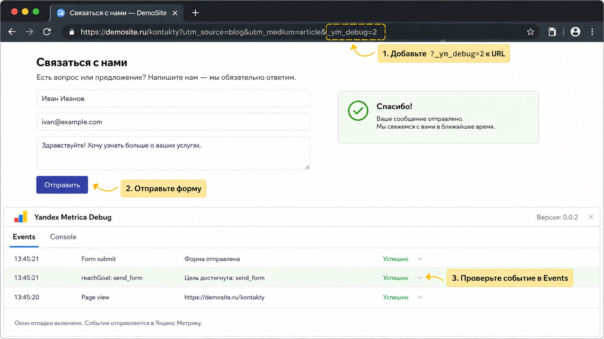
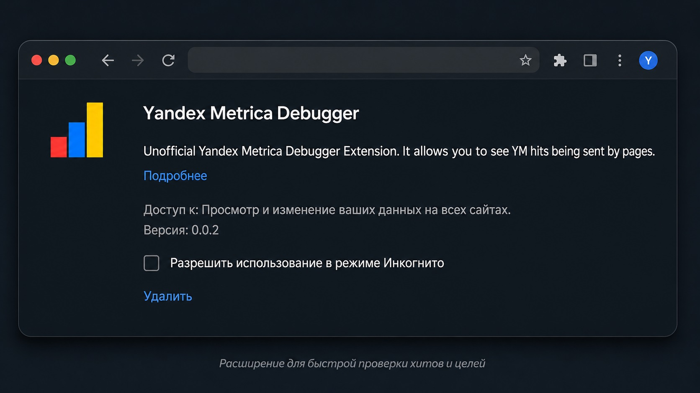

Блог о платном трафике
Как проверить цель в Яндекс Метрике
После настройки цели я всегда проверяю ее сразу. Отправлять тестовую форму, а потом обновлять отчеты Яндекс Метрики и ждать, когда там появится конверсия, неудобно. Особенно если цель не сработала: вы просто теряете время и все равно не понимаете, где ошибка.
У Яндекс Метрики есть встроенный отладчик. Он показывает события прямо во время проверки сайта. Самый простой способ его запустить - добавить к адресу страницы параметр _ym_debug=2. После этого можно отправить форму, нажать кнопку или выполнить другое целевое действие и сразу посмотреть, увидела ли его Метрика.
Сами цели на конкретной платформе я разбирал отдельно: например, как настроить цели Яндекс Метрики на Tilda.
Как проверить цель в Яндекс Метрике через _ym_debug=2
Откройте страницу сайта, на которой хотите проверить цель, и добавьте в конец адреса:
?_ym_debug=2
Например:
https://site.ru/?_ym_debug=2
или:
https://site.ru/order/?_ym_debug=2
Если в URL уже есть параметры после знака ?, новый параметр добавляется через &:
https://site.ru/?utm_source=test&_ym_debug=2
После загрузки страницы внизу появится значок отладчика Яндекс Метрики. Выполните нужное действие на сайте, например отправьте форму, нажмите кнопку или перейдите по номеру телефона, затем откройте панель отладки.
Яндекс показывает информацию о событиях на вкладках Events и Console. Console дает более подробные данные.

Это намного удобнее обычной проверки через отчеты. Вы сразу видите главное: событие вообще ушло в Метрику или нет.
Что должно появиться в отладчике
Результат зависит от типа цели.
| Тип цели | Что искать при проверке |
|---|---|
| JavaScript-событие | название цели, переданное через reachGoal |
| Отправка формы | событие отправки формы |
| Клик по кнопке | событие нажатия на кнопку |
| Посещение страницы | PageView |
| Клик по телефону | событие с номером телефона |
| Клик по email | событие с адресом электронной почты |
| Скачивание файла | событие File и URL скачиваемого файла |
Для JavaScript-цели особенно удобно смотреть Console. Если на сайте вызывается, например:
ym(12345678, 'reachGoal', 'send_form')
после отправки формы в отладчике должно быть видно событие с идентификатором send_form.
Для цели типа «Отправка формы» во вкладке Events должна появиться информация об отправке формы. Аналогично проверяются кнопки, телефоны, email и другие стандартные цели Метрики.
Как проверить отправку формы
Это один из самых частых случаев.
Допустим, на лендинге есть форма заявки. После ее настройки не нужно ждать появления тестовой конверсии в статистике.
Делайте так:
- Откройте страницу формы с параметром
_ym_debug=2. - Заполните форму тестовыми данными.
- Отправьте ее.
- Откройте панель отладки.
- Проверьте вкладки Events и Console.
Если событие отправки появилось, Метрика его получила. Дальше уже можно проверить, появилась ли сама конверсия в отчете.
Если события нет вообще, ждать отчет бессмысленно. Проблема находится на уровне сайта, счетчика или настройки цели.
Это, на мой взгляд, главное преимущество отладчика: он сразу разделяет две совершенно разные ситуации. Либо сайт не отправил событие, либо событие отправилось и нужно разбираться уже с его обработкой в Метрике.
Yandex Metrica Debugger: расширение для браузера
Есть еще один вариант - браузерное расширение Yandex Metrica Debugger. Оно показывает хиты, которые страница отправляет в Яндекс Метрику, включая reachGoal, просмотры страниц, параметры пользователей и ряд других событий.
Расширение неофициальное. На скриншоте как раз показана версия Yandex Metrica Debugger 0.0.2.

С ним удобно работать через инструменты разработчика браузера: выполняете действие на сайте и смотрите, какой запрос был отправлен в Метрику.
Но здесь есть существенный нюанс. Расширение старое, а опубликованные материалы о нем указывают, что разработка больше не поддерживается. Поэтому в 2026 году я бы не делал его основным инструментом для проверки целей. Если оно у вас уже установлено и работает, пользоваться можно. Для обычной проверки проще и надежнее встроенный отладчик через _ym_debug=2.
Яндекс Браузер поддерживает установку совместимых расширений из Chrome Web Store, поэтому Chrome-расширения такого типа в принципе могут использоваться и в нем.
Что делать, если _ym_debug=2 не работает
Параметр _ym_debug=2 работает с новым кодом счетчика Яндекс Метрики. Если на сайте установлена старая версия или панель по какой-то причине не появляется, Яндекс рекомендует использовать консоль браузера.
Добавьте к адресу:
?_ym_debug=1
Например:
https://site.ru/?_ym_debug=1
После этого откройте консоль браузера:
Ctrl + Shift + J
На macOS:
Option + Command + J
Теперь выполните целевое действие на сайте.
При достижении JavaScript-цели в консоли появляется вызов Reach goal. Для отправки формы Яндекс приводит строку вида Form goal, для кнопки - Button goal.
Этот вариант немного менее удобен визуально, зато помогает, когда встроенная панель отладки не запускается.
Почему цель может не срабатывать
Если событие не появляется даже в отладчике, первым делом проверьте сам счетчик и настройки цели.
Частые причины:
- счетчик не установлен на нужной странице;
- работу Метрики блокирует AdBlock или другое расширение;
- на сайте установлены скрипты, мешающие загрузке счетчика;
- фильтры Метрики исключают ваш визит;
- для JavaScript-цели вообще не вызывается
reachGoal; - номер счетчика в
reachGoalотличается от номера счетчика, где создана цель; - идентификатор цели в коде и в настройках Метрики не совпадает.
Яндекс отдельно рекомендует проверить совпадение идентификатора JavaScript-цели и номера счетчика.
Есть еще один момент, о котором легко забыть. В настройках счетчика есть фильтр «Не учитывать мои визиты». Если он включен, Яндекс рекомендует проводить проверку в режиме Инкогнито.
То есть отсутствие тестовой конверсии еще не означает, что цель настроена неправильно. Сначала нужно убедиться, что ваш собственный визит вообще учитывается.
Нужно ли после этого проверять цель в отчетах
Да. Отладчик показывает, что событие было отправлено и зафиксировано счетчиком. После этого я обычно делаю еще одну проверку уже в самой Метрике.
Для этого можно открыть отчет по конверсиям и убедиться, что тестовое достижение цели появилось в статистике. Яндекс указывает, что данные в отчете начинают появляться через несколько минут после создания цели.
Но порядок лучше именно такой:
- Сначала проверить событие через
_ym_debug=2. - Убедиться, что Метрика его увидела.
- Потом проверить появление конверсии в отчете.
Так гораздо быстрее искать ошибки. Если события нет уже на первом этапе, нет никакого смысла сидеть и обновлять отчет.
Проверенные цели нужны не только для отчетов. По ним считается стоимость заявки и работают конверсионные стратегии рекламы, поэтому CPA в Яндекс Директе напрямую зависит от того, корректно ли Метрика фиксирует целевые действия.
Какой способ проверки цели использовать
Для большинства сайтов достаточно _ym_debug=2. Никаких дополнительных программ и расширений ставить не требуется.
Консоль с _ym_debug=1 нужна скорее как запасной вариант для старого кода счетчика или ситуации, когда встроенная панель не открывается.
Yandex Metrica Debugger тоже можно использовать, если расширение у вас уже установлено и нормально работает. Но сейчас встроенный инструмент самой Метрики практичнее и не зависит от стороннего расширения.
Настройка и проверка счетчика для меня часть работы над рекламой: что именно я делаю с кабинетом и аналитикой, видно в разделе что входит в работу над рекламой.
Частые вопросы
Как быстро проверить, сработала ли цель в Яндекс Метрике?
Добавьте к URL страницы _ym_debug=2, выполните целевое действие и откройте панель отладки. Информация о событиях отображается во вкладках Events и Console.
Нужно ли ждать появления цели в отчетах?
Для первоначальной проверки - нет. Через отладчик можно сразу увидеть, отправилось ли событие. Отчет нужен уже для дополнительной проверки того, что достижение цели попало в статистику.
Чем отличаются _ym_debug=1 и _ym_debug=2?
_ym_debug=2 запускает встроенную панель отладки для нового кода счетчика. _ym_debug=1 выводит отладочную информацию в консоль браузера и используется в том числе при старой версии счетчика.
Почему _ym_debug=2 не показывает панель?
Проверьте версию кода счетчика, блокировщики рекламы, наличие счетчика на странице и другие скрипты сайта. Яндекс также указывает среди возможных причин блокировку домена mc.yandex.ru.
Как проверить JavaScript-цель reachGoal?
Включите отладчик, выполните действие, которое вызывает reachGoal, и посмотрите Console. Там должно отображаться название цели, переданное в вызове метода.